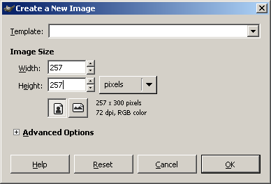
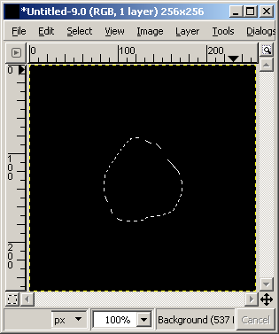
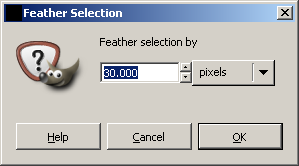
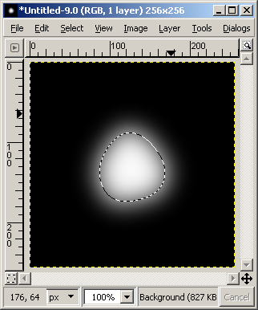

Tutorial:HeightMapWithPOVRay(RogerN)
Development < Map Development < Tutorial:HeightMapWithPOVRay(RogerN)
Overview
Most of the other Spring mapping tutorials focus primarily on the technical aspects of mapping related to compilation (e.g. how to compile your map, what size your height map should be, how to place features, etc…). Consequently, this tutorial will not go into those details. Instead, this document will focus solely on some tips for creating height maps.
Required Tools
In order to make this tutorial accessible to everyone, the tools we’ll be using are free, open source programs. We’re going to be using a generic painting / image processing program and a ray-tracer. These programs are:
GIMP: Best described as a Photoshop clone, this is an extremely useful image processing tool. It offers many of the same features as Adobe Photoshop at a much more reasonable price ($0).
POV-Ray: As a ray-tracer, POV-Ray is primarily designed to render 3D images. We’ll be using it to preview our height map in 3D. However, the program also has some tricks we can use to tweak our height map directly. Eventually we can also use POV-Ray to render the final texture for our map (covered in a different tutorial).
Once you’ve installed the above programs (or Photoshop instead of GIMP), there’s one other file you ought to download and extract:
Tutorial POV-Ray files: This archive contains some POV-Ray input files that we’ll be using throughout the tutorial.
A Simple Hill
|
In this first section of the tutorial we’ll be creating a height map for a 4x4 Spring map. This means that our height map needs to be 257 x 257 pixels. So, start up GIMP and create a new image by clicking "File > New". |
 |
{kind=link}
| To get our image ready for use, fill the entire image with black. Select black as your foreground color and then use the bucket fill tool to paint the whole thing black. |
{kind=link}
| Now we want to create a simple hill in the center of our map. Begin by selecting white as your foreground color. Next, we want to select the region which is going to be the top of our hill. Activate the lasso tool. |
{kind=link}
|
Use the lasso tool to outline a region in the center of the height map. This will be the top of our hill. Don’t make your selection too close to any of the sides because we’ll need some space around the edges later (the slopes going up our hill need space). |
 |
{kind=link}
|
Before we fill our selected region we want to ensure that our hill has gradual slopes (rather than a sheer face). Right-click the image and click "Select > Feather..." We’re going to use 30 pixels here to give a very gradual slope. |
 |
{kind=link}
|
Now we’re ready to draw the hill. Select white as your foreground color. Then right-click the image and click "Edit > Fill with FG color." Now we ought to have a hill in the center of our image with a nice gradient for the slopes. |
 |
{kind=link}
Our relatively simple hill is complete for now, so save the image as a bitmap in the same folder as the tutorial files downloaded previously. Right-click the image and click "File > Save as..."
Viewing in 3D
Before we continue to tweak our hill, we’d like to know what it looks like in 3D. POV-Ray can help us quickly render the height map in 3D.
Start up POV-Ray. Open the provided tutorial file, "Render3DHeight.pov". We have a few settings we want to check before we click run.
Near the top of the POV-Ray file you should see a section for Spring settings. We need to modify these settings for our current project. Specifically, we need to change the height map file name, the map size, and the altitude settings.
Change the height map file to match the name of the bitmap we saved in step 1. The next setting, ViewAngle, is fine at the default for now. The altitude settings need to match what we’ll eventually use for the map compiler – for now, choose 100 for the min and 500 for the max. Our Spring map size should be set to 4 x 4.
{kind=link}
We’re almost ready to render the 3D image. The last thing to do is pick the render resolution. Either use the drop-down box in the toolbar to select one of the common resolutions, or use the adjacent text box to type the resolution options directly:
{kind=link}
Now click the Run button on the tool bar. You ought to get a 3D picture of our simple hill.
{kind=link}
Making it realistic
Unfortunately, our simple hill looks quite unrealistic at the moment. The slopes are too regular to be believable. There are many techniques we can use to spice it up a bit. In this step we’ll be examining a simple POV-Ray trick for improving our height map.
Using POV-Ray again, open the provided tutorial file "RenderTurbulence.pov". This file will help us add some entropy to our height map to make it look more natural.
Once again, we need to modify some settings near the top of the file. Locate the Spring settings near the top and modify them to match our current project. We need to set the name of our height map file, and the map size:
{kind=link}
Immediately below the map size are settings for turbulence and noise. These settings control the style and amount of randomness or distortion that will be added to our height map. The default values ought to work fine. However, feel free to play around with the settings to get results that you like.
One important task remains before rendering a new height map. We need to ensure that POV-Ray is set to use the correct resolution! Remember that our height map needs to be 257 x 257 pixels. Use the text box in the POV-Ray tool bar to specify the output resolution:
{kind=link}
When you click the Run button in the tool bar, you should see a new version of the height map for our simple hill. POV-Ray has taken our original height map as input and added some turbulence to the image:
{kind=link}
Note that POV-Ray has saved the new image as "RenderTurbulence.bmp", and has not overwritten our original height map. Also, after applying turbulence in this fashion it is sometimes necessary to apply a small Gaussian blur to smooth out the rough edges (using GIMP, choose "Filters > Blur > Gaussian Blur...", radius 2). If POV-Ray renders the height map in 3D with small holes in some areas then the height map ought to be smoothed / blurred.
So what does our height map look like in 3D now that we’ve added turbulence? Return to "Render3DHeight.pov" in order to find out. Remember that our original height map hasn’t changed, so we need to update the file name to "RenderTurbulence.bmp".
The new height map looks something like this when rendered in 3D:
{kind=link}
Not bad! It’s definitely more realistic than our first attempt. At this point I recommend that you play around with the various turbulence / noise settings, to see how they affect the results. The default values use only turbulence; be sure to try increasing the NoiseAmplitude.
Create a mountain range
In creating the template for our simple hill (step #1) we used a feathered selection to generate a rounded hilltop. This section of the tutorial will demonstrate a slightly different approach which may yield better results for mountains (not hills). Mountains differ from hills in that they tend to be pointed at the top and more angular in shape.
Start up GIMP and create another 257 x 257 height map. Fill the image with black, as before.
Now, using the lasso tool, select a roughly triangular region:
{kind=link}
Next we want to use the gradient tool to fill in our triangular region. First, select the gradient tool.
{kind=link}
Ensure that the foreground color is set to white, and that the background color is set to black. With the gradient tool selected, ensure that the Shape is set to "Shaped (angular)."
{kind=link}
Click anywhere inside the selected region and drag the mouse a short distance. When you release the mouse button, the gradient tool will fill our selection:
{kind=link}
By itself this would be a pretty poor (and lonely) mountain, even with turbulence and noise added. But by repeating the process several times (with different shades of gray) we can make a nice mountain range. Use GIMP layers set to Screen in order to overlay mountains effectively.
{kind=link}
{kind=link}
In the 3D screenshot note that we’ve added some turbulence (settings were tweaked to get good results) and blurred the results a bit.